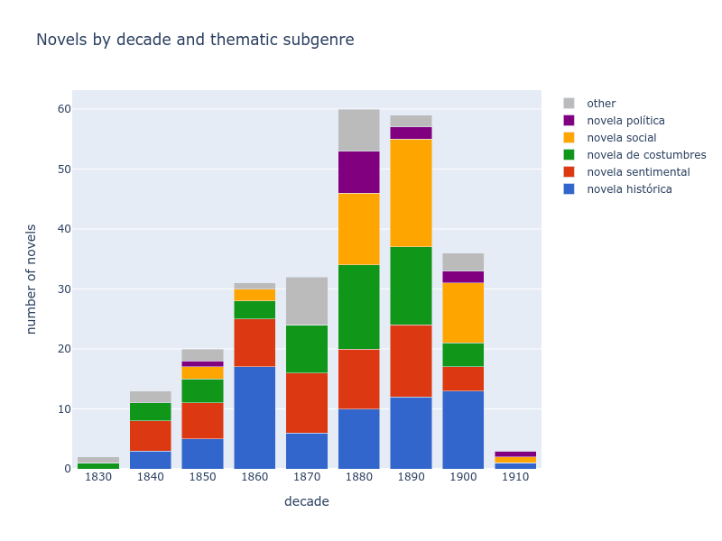
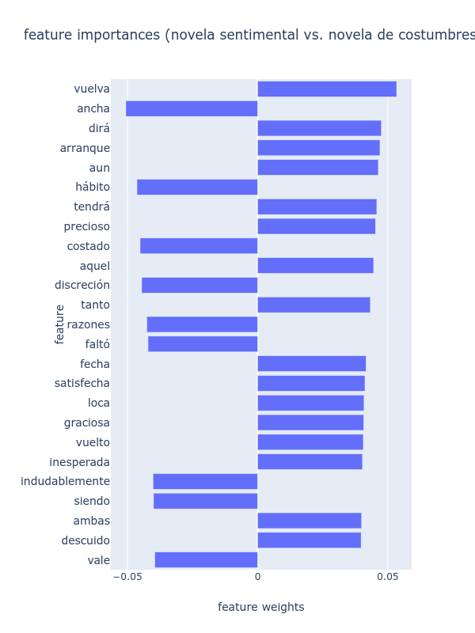

Time for Genre:
Temporal Expressions as Features for the Classification of Literary Subgenres
Ulrike Henny-Krahmer
(NFDI4Culture, University of Cologne)
Conference "EADH2021",
September 23, 2021
Slides at: https://hennyu.github.io/eadh_21/
Overview
- Introduction:
Classification of Literary Subgenres with Temporal Expressions - Corpus and Methods:
19th Century Novels, Temporal Tagging, and Classification - Results and Discussion
- Conclusions
Introduction:
Classification of Literary Subgenres with Temporal Expressions
Classification of Literary Subgenres
- Classification of texts by genre: major concern of Computational Linguistics (e.g. Biber 1992) and Computational Literary Studies (Underwood 2015; Hettinger et al. 2016; Schöch 2017)
- Use of different types of features (MFW, topics, sentiments, character networks)
- Overall goal: better understand distinctive features
- Here: temporal expressions as features
Temporal expressions
Sequences of tokens that refer to time (Ferro et al. 2005)
| DATE/TIME | When did something happen? | "on October 5th, 1850", "3 p.m." |
| DURATION | How long did it last? | "for three hours" |
| SET | How often did it occur? | "every Tuesday" |
- Studies about temporal expressions in literary texts: Bögel et al. 2015; Fischer and Strötgen 2015a, 2015b; Gius and Jacke 2015
- ≠ subgenre classification
Subgenres of the novel
- Here: Spanish American 19th century novels
- Types of novels: historical, customs ("novela de costumbres"), sentimental
- Time in the novels:
- temporal perspective: events in the present / past
- precise / vague temporal location
- hypotheses: more precise temporal expressions in historical novels, more fuzzy/unspecified ones in sentimental novels
Questions
- How useful are temporal features in general for the classification of novels by subgenre?
- How relevant are different temporal expressions for different subgenres?
Corpus and Methods:
19th Century Novels, Temporal Tagging, and Classification
Corpus
|  |
Conha19: https://github.com/cligs/conha19 256 novels:
|
Methods
- Temporal tagging: HeidelTime 2.2.1 (Strötgen and Gertz 2015)
- Linguistic annotation: TreeTagger 3.2.3 (Schmid 1995) and FreeLing 4.0 (Padró and Stanilovsky 2012)
- Classification: linear SVM, C = 100, undersampling, random selection of novels (10 times), 10-fold cross-validation
Features: temporal expressions
- 499 different features
- basic types of temporal expressions (DATE, TIME, DURATION, SET)
- custom subtypes (e.g. fully vs. unspecified DATES: "Mayo de 1854" vs. "hoy")
- 50 most frequent temporal expressions of each basic type (e.g. "hoy", "las 9 de la noche", "dos horas", "cada día")
- counts of different verb tenses (present, imperfect, future, past, conditional)
- relative / proportional values
- see https://github.com/hennyu/time_for_genre_eadh21
Features: MFW
- another feature set of 4,000 MFW
- tf-idf values
- for comparison and combination
- (see Hettinger et al. 2016, Henny-Krahmer forthcoming)
Results and Discussion
Classification results (mean accuracies)
| Subgenres | Temporal features | MFW | Temporal + MFW |
|---|---|---|---|
| historical novel vs. other | 0.70 | 0.83 | 0.85 |
| sentimental novel vs. other | 0.64 | 0.78 | 0.77 |
| novel of customs vs. other | 0.62 | 0.72 | 0.73 |
| historical novel vs. sentimental novel | 0.74 | 0.92 | 0.91 |
| historical novel vs. novel of customs | 0.76 | 0.86 | 0.89 |
| sentimental novel vs. novel of customs | 0.59 | 0.74 | 0.74 |
Most important features (historical vs. customs)

Most important features (hist. vs. sentimental)

Most important features (sent. vs. customs)
Conclusions
Conclusions
- classification of literary subgenres with temporal features alone: above baseline of 50%
- MFW alone: better
- MFW + temporal features: results improve for certain constellations (when the sentimental novel is not involved), but remain the same or get slightly worse for others
Conclusions
- temporal features add relevant information for the distinction of some subgenres, but not for all
- feature weights: a few very specific temporal features are relevant (fully specified dates, times of the day)
- subgenres are not all defined on the same textual and linguistic levels
- next steps: evaluate quality of temporal tagging in more detail, classify other types of novels
Thank you!
Slides at: https://hennyu.github.io/eadh_21/
References (1)
- Biber, Douglas (1992): "The multidimensional approach to linguistic analyses of genre variation: An overview of methodology and finding", in: Computers in the Humanities 26, 5-6: 331-347
- Bögel, Thomas / Strötgen, Jannik / Gertz, Michael (2015): “A Hybrid Approach to Extract Temporal Signals from Narratives”, in: Proceedings of the International Conference of the German Society for Computational Linguistics and Language Technology (GSCL’15), Duisburg-Essen, September-October 2015: 106-107 http://web.archive.org/web/20210616084719/https://konvens.org/proceedings/2015/GSCL-201514.pdf [15.06.2021].
- Calderón, Mario (2005): “La novela costumbrista mexicana”, in: Clark de Lara, Belem / Speckman Guerra, Elisa (eds.): La república de las letras. Asomos a la cultura escrita del México decimonónico. Vol. 1: Ambientes, asociaciones y grupos. Movimientos, temas y géneros literarios. México: Universidad Nacional Autónoma de México: 315-324.
- Fernández Prieto, Celia (1996): “Poética de la novela histórica como género literario”, in: Signa. Revista de la Asociación Española de Semiótica 5: 185-202.
- Ferro, Lisa / Gerber, Laurie / Inderjeet, Mani / Sundheim, Beth / Wilson, George (2005): TIDES. 2005 Standard for the Annotation of Temporal Expressions. http://web.archive.org/web/20200716215051/https://www.ldc.upenn.edu/sites/www.ldc.upenn.edu/files/english-timex2-guidelines-v0.1.pdf [15.06.2021].
- Fischer, Frank / Strötgen, Jannik (2015a): “Un calendario de la literatura española (aplicación para Android e iOS)”, in: LINHD (ed.): Humanidades Digitales Hispánicas (HDH’15), Madrid, October 2015 . http://web.archive.org/web/20210126221259/https://dbs.ifi.uni-heidelberg.de/files/Team/jannik/hdh2015-madrid-slides.pdf [15.06.2021].
- Fischer, Frank / Strötgen, Jannik (2015b): “When Does German Literature Take Place? – On the Analysis of Temporal Expressions in Large Corpora”, in: ADHO (ed.): DH 2015: Annual Conference of the Alliance of Digital Humanities Organizations, Sydney, June-July 2015. http://web.archive.org/web/20210616084951/https://dbs.ifi.uni-heidelberg.de/files/Team/jannik/publications/fischer-stroetgen_temporal-expressions-in-literary-corpora_dh2015_final_2015-03-01.pdf [15.06.2021].
References (2)
- Gius, Evelyn / Jacke, Janina (2015): Zur Annotation narratologischer Kategorien der Zeit. Guidelines zur Nutzung des CATMA-Tagsets. Hamburg. http://web.archive.org/web/20201212151209/http://heureclea.de/wp-content/uploads/2016/11/guidelinesV2.pdf [15.06.2021].
- Henny-Krahmer, Ulrike (ed.) (2021): Corpus de novelas hispanoamericanas del siglo XIX (conha19). Version 1.0.1. Github.com. https://github.com/cligs/conha19 [15.06.2021]. DOI: 10.5281/zenodo.4766987.
- Henny-Krahmer, Ulrike [Forthcoming]: Genre Analysis and Corpus Design: 19th Century Spanish American Novels (1830-1910). Ph.D. thesis, University of Würzburg.
- Hettinger, Lena / Reger, Isabella / Jannidis, Fotis / Hotho, Andreas (2016): “Classification of Literary Subgenres”, in: DHd2016. Konferenzabstracts, Leipzig, March 2016: 160-164. DOI: 10.5281/zenodo.4645369.
- Janik, Dieter (2008): Hispanoamerikanische Literaturen. Von der Unabhängigkeit bis zu den Avantgarden (1810-1930). Tübingen: Narr Francke Attempto.
- Lefere, Robin (2013): La novela histórica: (re)definición, caracterización, tipología. Madrid: Visor Libros.
- Padró, Lluis / Stanilovsky, Evgeny (2012): “FreeLing 3.0. Towards Wider Multilinguality”, in: Proceedings of the Language Resources and Evaluation Conference (LREC 2012) ELRA, Istanbul, May 2012. http://web.archive.org/web/20210117151054/http://nlp.lsi.upc.edu/publications/papers/padro12.pdf [15.06.2021].
References (3)
- Pedregosa, Fabian / Varoquaux, Gaël / Gramfort, Alexandre / Michel, Vincent / Thirion, Bertrand / Grisel, Olivier / Blondel, Mathieu / Prettenhofer, Peter / Weiss, Ron / Dubourg, Vincent / Vanderplas, Jake / Passos, Alexandre / Cournapeau, David / Brucher, Matthieu / Perrot, Matthieu / Duchesnay, Édouard (2011): “Scikit-learn: Machine Learning in Python”, Journal of Machine Learning Research 12: 2825-2830. http://web.archive.org/web/20210616092859/https://jmlr.org/papers/volume12/pedregosa11a/pedregosa11a.pdf [15.6.2021].
- Schmid, Helmut (1995): “Probabilistic Part-of-Speech Tagging Using Decision Trees”, in: Proceedings of the International Conference on New Methods in Language Processing, Manchester, UK, 1994 . http://web.archive.org/web/20210616092524/https://www.cis.uni-muenchen.de/~schmid/tools/TreeTagger/data/tree-tagger1.pdf [15.06.2021].
- Schöch, Christof (2017): “Topic Modeling Genre: An Exploration of French Classical and Enlightenment Drama”, in: Digital Humanities Quarterly 11, 2. http://web.archive.org/web/20210616092707/http://www.digitalhumanities.org/dhq/vol/11/2/000291/000291.html [15.06.2021].
- Spang, Kurt (1998): “Apuntes para una definición de la novela histórica”, in: Spang, Kurt / Arellano, Ignacio / Mata, Carlos (eds.): La novela histórica. Teoría y comentarios. Pamplona: EUNSA: 63-125.
- Strötgen, Jannik / Gertz, Michael (2015): “A Baseline Temporal Tagger for all Languages”, in: Association for Computational Linguistics (ed.): Proceedings of the 2015 Conference on Empirical Methods in Natural Language Processing, Lisbon, September 2015: 541-547. DOI: 10.18653/v1/D15-1063.
- Strötgen, Jannik / Gertz, Michael (2016): Domain-Sensitive Temporal Tagging. S. L.: Morgan & Claypool.
- Underwood, Ted (2015): Understanding Genre in a Collection of a Million Volumes. White Paper Report 109365. Urbana-Champaign: University of Illinois. DOI: 10.17613/M6W07V.